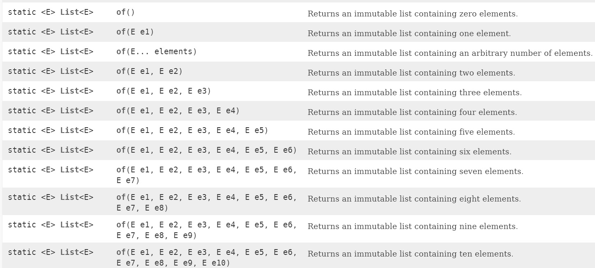

不可變特性
September 29, 2022不可變（Immutability）是函數式程式設計的基本特性之一，若你試著去瞭解函數式程式設計，會看到有不少說法是這麼描述：「純函數式語言中的變數是不可變的。」是這樣的嗎？基本上沒錯，在純函數式語言中（像是 Haskell），當你說 x = 1，那麼無法再修改它的值，x 就是 1，1 的名稱（而不是變數）就是 x，不會再是其他的東西，實際上，在純函數式語言中，並沒有變數的概念存在。
淺談不可變
Java 並不是以函數式作為主要典範，一開始沒有不可變的概念與特性，在 Java 中想使用變數來模仿不可變特性，通常會是把變數加上 final 修飾，然後試圖在這樣的限制之上，將程式目的實現出來。
談到不可變特性，就會相對應地談到副作用（Side effect），一個具有副作用的方法會改變物件狀態，例如 Collections 的 sort 方法，會調整 List 實例的元素順序，這就使得 List 實例的狀態改變，因而 sort 方法是有副作用的方法，而 List 本身的 add 方法，會增加內含元素的數量，這就使得 List 實例的狀態改變，因而 List 本身的 add 方法是有副作用的方法。
一個 Java 應用程式在運行期間，系統本身的狀態是在不斷變化的，而系統的狀態就是由許多物件的狀態來組成，如果程式語言本身有變數的概念，在撰寫時就容易調整變數值，從而容易調整物件狀態，也就容易變更整個系統狀態。
然而，副作用是個雙面刃，在一個設計不良的系統中，若沒有適當地控管副作用，追蹤物件的狀態就會越來越困難，最後系統的狀態就會難以掌握，常見的問題是除錯困難，難以追查系統發生錯誤的原因，更可怕的是，你明明知道程式應該是寫錯了，系統卻能正常運作，只能擔憂著哪天踏到裏頭的地雷而爆出系統大洞。
如果變數不可變，那設計出來的方法就不會有副作用，物件狀態也會是不可變，不可變物件（Immutable object）有許多好處，像是在並行（Concurrent）程式設計時，就不用擔心那些執行緒共用競爭的問題；在面對資料處理問題若需要一些 Collection 物件，像是有序的 List、收集不重複物件的 Set 等，如果這些物件不可變，那麼就有可能共用資料結構，達到節省時間及空間之目的。
Java 畢竟不是以函數式為主要典範，在設計 Collection 框架時，並沒有為不可變物件設計專用型態，看看 Collection 介面就知道了，那些 add、remove 等方法就直接定義在上頭。有趣的是，在〈Collections Framework Overview〉中談到了，有些方法操作都是選用的（optional），如果不打算提供實作的方法，可以丟出 UnsupportedOperationException，而實作物件必須在文件上指明，支援哪些操作。
雖然 Java 不是以函數式為主要典範，然而有時在設計上，為了限制副作用的發生，會希望某些物件具有不可變的特性，以便易於掌握物件狀態，從而使得系統的某個部份容易掌握其狀態。
由於 Collections 與 Map 在程式中會用來收集與管理物件，為了容易掌握這些物件的狀態，在 JDK8 以及先前的版本上，會透過 Collections 上提供的 unmodifiableCollection、unmodifiableList、unmodifiableSet、unmodifiableMap 等 static 方法來取得一個無法修改的（unmodifiable）物件，然而這還不夠，為了更進一步支援不可變特性，JDK9 以後在 List、Set、Map 上直接提供了 of 方法，用以建立不可變的 List、Set 或 Map 實作物件。
就實務面上，兩者都應該認識，而認識 Collections 的 unmodifiableXXX() 方法，也會比較清楚瞭解到，為何 JDK9 以後在 List、Set、Map 上要提供 of 方法以建立不可變的 List、Set 或 Map 實作物件。
unmodifiableXXX 方法
如果原本有個 Collection 或 Map 已收集了一些元素，現在打算傳遞這個物件，而且不希望拿到此物件的任何一方對它做出修改（Modify）操作，那麼可以使用 Collections 上提供的 unmodifiableXXX 方法，那些方法會傳回一個不可修改的物件，如果單純只是取得元素是沒問題，如果呼叫了有副作用的 add、 remove 等方法，則會丟出 UnsupportedOperationException，例如：
jshell> List<String> names = new ArrayList<>();
names ==> []
jshell> names.add("Monica");
$2 ==> true
jshell> names.add("Justin");
$3 ==> true
jshell> List<String> unmodifiableNames = Collections.unmodifiableList(names);
unmodifiableNames ==> [Monica, Justin]
jshell> unmodifiableNames.get(0);
$5 ==> "Monica"
jshell> unmodifiableNames.add("Irene")
| java.lang.UnsupportedOperationException thrown:
| at Collections$UnmodifiableCollection.add (Collections.java:1056)
| at (#6:1)
那麼，透過 unmodifiableXXX 方法傳回的物件是不可變嗎？不是，傳回的物件只是無法修改（Unmodifiable），也就是僅僅不支援修改操作罷了，這是什麼意思？以上面的程式片段來說，如果我直接呼叫 names.add("Irene")，unmodifiableNames 的內容也就跟著變動了：
jshell> names.add("Irene");
$7 ==> true
jshell> unmodifiableNames;
unmodifiableNames ==> [Monica, Justin, Irene]
之所以會如此，是因為 get、containsAll 這類方法，只是單純委託給 unmodifiableXXX 接收之物件（而 add 等方法直接撰寫 throw new UnsupportedOperationException），例如 unmodifiableCollection 方法的實作是這樣的：
public static <T> Collection<T> unmodifiableCollection(Collection<? extends T> c) {
return new UnmodifiableCollection<>(c);
}
static class UnmodifiableCollection<E> implements Collection<E>, Serializable {
private static final long serialVersionUID = 1820017752578914078L;
final Collection<? extends E> c;
UnmodifiableCollection(Collection<? extends E> c) {
if (c==null)
throw new NullPointerException();
this.c = c;
}
略...
public boolean add(E e) {
throw new UnsupportedOperationException();
}
public boolean remove(Object o) {
throw new UnsupportedOperationException();
}
public boolean containsAll(Collection<?> coll) {
return c.containsAll(coll);
}
略...
}
不可變從來也沒在 Collections 上那些 unmodifiableXXX 方法的保證中，畢竟名稱上也指出了，傳回的物件是不可修改，而不是不可變動。無論這是不是在玩文字遊戲，如果你要的是更進一步的不可變特性，那麼使用 Collections 的 unmodifiableXXX 傳回的物件，顯然是有所不足。
of 方法
JDK9 以後在 List、Set、Map 等，都提供了 of 方法，表面上看來，它們似乎只是建立 List、Set、Map 實例的便捷方法，例如：
jshell> List<String> nameLt = List.of("Justin", "Monica");
nameLt ==> [Justin, Monica]
jshell> Set<String> nameSet = Set.of("Justin", "Monica");
nameSet ==> [Monica, Justin]
jshell> Map<String, Integer> scoreMap = Map.of("Justin", 95, "Monica", 100);
scoreMap ==> {Justin=95, Monica=100}
比較特別的是 Map.of，它是採取 Map.of(K1, V1, K2, V2) 的方式建立，也就是鍵、值、鍵值的方式來指定。List、Set、Map 的 of 方法建立的是不可變物件，你不能對它們呼叫有副作用的方法，否則會拋出 UnsupportedOperationException，例如：
jshell> nameLt.add("Irene");
| java.lang.UnsupportedOperationException thrown:
| at ImmutableCollections.uoe (ImmutableCollections.java:70)
| at ImmutableCollections$AbstractImmutableList.add (ImmutableCollections.java:76)
| at (#5:1)
jshell> nameSet.add("Irene");
| java.lang.UnsupportedOperationException thrown:
| at ImmutableCollections.uoe (ImmutableCollections.java:70)
| at ImmutableCollections$AbstractImmutableSet.add (ImmutableCollections.java:280)
| at (#6:1)
jshell> scoreMap.put("Irene", 100);
| java.lang.UnsupportedOperationException thrown:
| at ImmutableCollections.uoe (ImmutableCollections.java:70)
| at ImmutableCollections$AbstractImmutableMap.put (ImmutableCollections.java:557)
| at (#7:1)
那麼可以避免方才 Collections 的 unmodifiableXXX 上提到之問題嗎？這些 of 方法多數都是採可變長度引數的方式定義，而是重載了多個不同參數個數的版本，以 List 的 of 方法為例：

在引數少於 10 個的情況下，會使用對應個數的 of 版本，因而不會有參考原 List 實例的問題，至於那個 of(E… elements) 版本，內部並不會直接參考原本 elements 參考的實例，而是建立一個新陣列，然後對 elements 的元素逐一淺層複製，底下列出 JDK 中的原始碼實作片段以便瞭解：
ListN(E... input) {
// copy and check manually to avoid TOCTOU
@SuppressWarnings("unchecked")
E[] tmp = (E[])new Object[input.length]; // implicit nullcheck of input
for (int i = 0; i < input.length; i++) {
tmp[i] = Objects.requireNonNull(input[i]);
}
this.elements = tmp;
}
因此在資料結構上，就算對該版本的 of 方法直接傳入陣列，也沒有參考至原 elements 參考之物件的疑慮，從而更進一步支援了不可變特性，然而要注意，因為是元素是淺層複製，如果你直接變更了元素的狀態，of 方法傳回的物件還是會反應出對應的狀態變更。例如：
jshell> class Student {
...> String name;
...> }
| created class Student
jshell> Student student = new Student();
student ==> Student@cb644e
jshell> student.name = "Justin";
$3 ==> "Justin"
jshell> List<Student> students = List.of(student);
students ==> [Student@cb644e]
jshell> students.get(0).name;
$5 ==> "Justin"
jshell> student.name = "Monica";
$6 ==> "Monica"
jshell> students.get(0).name;
$7 ==> "Monica"
以上面的程式片段來說，如果你想要更進一步的不可變特性，應該令 Student 類別在定義時也支援不可變特性，如此一來，使用 List.of 方法才有意義，例如：
jshell> class Student {
...> final String name;
...> Student(String name) {
...> this.name = name;
...> }
...> }
| created class Student
jshell> Student student = new Student("Justin");
student ==> Student@cb644e
jshell> List<Student> students = List.of(student);
students ==> [Student@cb644e]
你也許會想到 Arrays.asList 方法，似乎與 List.of 方法很像，Arrays.asList 方法傳回的物件長度固定，確實也是無法修改，由於方法定義時使用不定長度引數，也可以直接指定陣列作為引數，這就會引發類似的問題：
jshell> String[] names = {"Justin", "Monica"};
names ==> String[2] { "Justin", "Monica" }
jshell> List<String> nameLt = Arrays.asList(names);
nameLt ==> [Justin, Monica]
jshell> names[0] = "Irene";
$3 ==> "Irene"
jshell> nameLt;
nameLt ==> [Irene, Monica]
會發生這個問題的理由類似，Arrays.asList 傳回的物件，內部參考了 names 參考之物件（你可以試著查看 Arrays.java 的原始碼實作來驗證）；如果你需要的是不可變物件，而不是無法修改的物件，那麼在 JDK9 以後，建議改用 List.of，而不是 Arrays.asList 了。